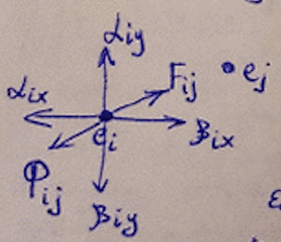
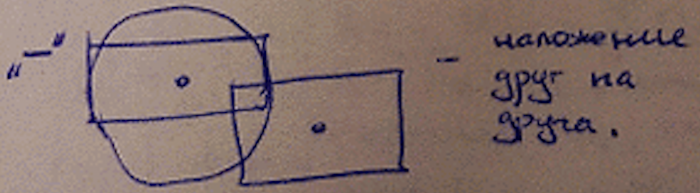

Вопрос 10: Непрерывно-дискретные методы размещения элементов
Данные методы работают в непрерывном монтажном поле, т.е. сетка позиций необязательна. Если сетка позиций задана, то задача решается в два этапа:
- Элементы размещаются на непрерывном монтажном поле;
- Сдвиг на фиксированную позицию.
Эти методы сводят задачу размещения к решению системы дифференциальных уравнений:
Алгоритм на основе силовых функций
Вершины графа представлены как системы материальных точек, на которые действуют силы притяжения или отталкивания. Тогда решением задачи будет такое положение точек, при котором наступает состояние динамического уравновешивания.
– сила притяжения.
Чем больше расстояние между точками, тем сила больше, и чем больше рёбер, тем сила больше.
– сила отталкивания.
Если связей между элементами нет, то сила отсутствует. - коэффициенты, которые подбираются экспериментально.
– силы притяжения и отталкивания от границ монтажного поля.

Система уравнений:
Необходимо учитывать размер элементов, иначе может произойти следующая ситуация:
